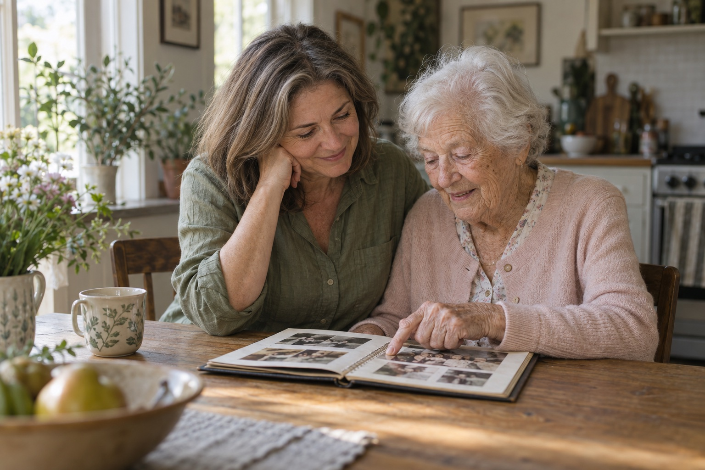
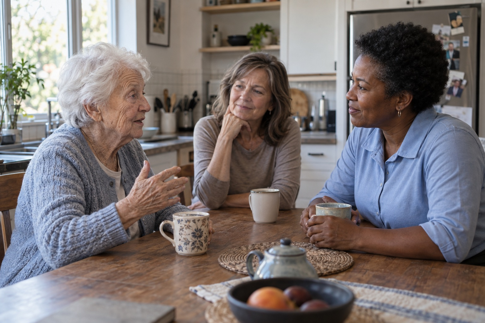

Mom ate lunch and was in good spirits. We spent some time on her puzzle. Nothing unusual to report.
Home care, thoughtfully.
Be her
daughter.
We’ll help carry the care.
Dependable help at home.
A little more life for both of you.
Her home. Her routines. Her say.
What would help right now?
You don’t need to have it all figured out.
Her life. Your life.
Room for both.
You can love your mom without doing everything yourself.
Still her home.
Still her way.
Her favorite chair. Tea just how she likes it. A say in who comes through the door.
We help with what’s become difficult while respecting what she wants to keep doing herself.
Support that fits around her life.A daughter.
Not the whole care team.
The appointments. The laundry. The calls. The nights you don’t really sleep.
You don’t need someone telling you to be strong. You need dependable help, so work, rest, and your own family can have some room again.
Getting help is a way to care for both of you.Start with the help
you actually need.
A regular break or more hands-on support.
We can build from there.

More moments that feel like you.
Respite care
You don’t have to step away from everything to get a break. A caregiver can be there while you work, rest, or take time that belongs to you.
Explore respite carePersonal care
Thoughtful help with bathing, dressing, grooming, toileting, and moving around at home. Her privacy and preferences come first.
Explore personal careCompanionship
A familiar person for a conversation, a shared meal, or the things she enjoys. Company for her, and less worrying for you.
Explore companionshipDementia & memory support
A patient presence and familiar routines for the everyday challenges of memory loss. We’ll discuss the support Mom needs and what our team can provide.
Explore memory supportPost-operative care
A little more support after coming home. Help with meals, personal care, and the everyday while you recover.
Explore post-operative care24-hour & live-in care
Support that fits the day and the night. We’ll talk through awake overnight care, rotating shifts, and live-in arrangements.
Explore 24-hour & live-in care
A hello.
Before a
helping hand.
You and Mom meet the caregiver before regular care begins. Ask questions. See how they interact. Let her get comfortable.
If the fit isn’t right, tell us.
We’ll help make the switch. No hassle.
Her world.
A little more
support around it.
Mom stays at the center. A small, familiar team works around her routines, with your family part of the conversation.
Because the worst time to meet someone new is the morning your regular caregiver gets sick.
Meet the Pink Glove Standard™MomHer home.
Her routines.
Her say.
Her routines.
Her say.
Primary caregiver
A face she knows. A rhythm that feels familiar.
Familiar backup
Introduced ahead of time
whenever possible.
Care coordinator
One person to call. Someone who follows through.
Mom’s family
In the loop.
With room to be family.
The Pink Glove Care Circle™
Know how Mom’s doing.
Without another
thing to manage.
A little about her day. Anything we noticed. What needs your attention—and what doesn’t.
All good keeps you connected. Needs your attention gets a conversation.
Breakfast, a short walk to the mailbox, and her morning programs. She asked to finish the puzzle border tomorrow.
We noticed something today and wanted you to know. Your coordinator will call to talk it through.
A few things you
might be wondering.
What if Mom doesn’t want help?
We start by listening to her. With our Gentle Start, you can be there for the introduction, and care can begin with something less personal, like a meal or companionship, where appropriate. Mom gets a say in her routines and who comes into her home.
Can I start with just a little help?
Yes, we can talk about respite care or a regular break. We’ll discuss what you need, the available schedules, and any minimum hours before you make a decision.
How much does care cost?
Costs depend on the support and schedule your family needs. Before care begins, we’ll explain the rate, minimum hours, any additional fees, and what happens if your plans change. You’ll have the details before agreeing to care.
What if the caregiver isn’t the right fit?
Tell your coordinator. The Meet & Match Promise gives you and Mom a chance to meet your caregiver before regular care begins. If it doesn’t feel right, we’ll help arrange another match. No awkward explanation needed.
Will asking for help lead to lots of calls?
Your inquiry goes directly to Pink Glove Care. We don’t send it to a list of agencies. Choose call, text, or both in the inquiry, and we’ll use your preference to respond.
One less thing
to figure out alone.
Practical guides for you and Mom.

A little more
breathing room
starts here.
You don’t need to have all the answers. Tell us what’s becoming hard, and we’ll help you think through the next step.
Your request comes to Pink Glove Care—not a network of providers. We don’t sell your inquiry.
Bring your care.
We’ll bring the support.
Good care starts with people who feel supported, too.